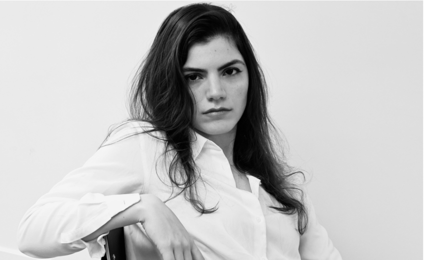

02
Le cerveau, ouvert
About

Je fais des images. Parfois je les capture, parfois je les invente.
Photographe le matin, directrice artistique l'après-midi — et l'inverse le lendemain.
Je travaille entre le portrait, l'éditorial et l'affiche de cinéma.
J'aime les marques qui ont quelque chose à dire et les visages qui ne mentent pas.
Tout commence par un carnet, un repérage, une idée notée trop vite.
« Une bonne image, c'est un secret bien cadré. »